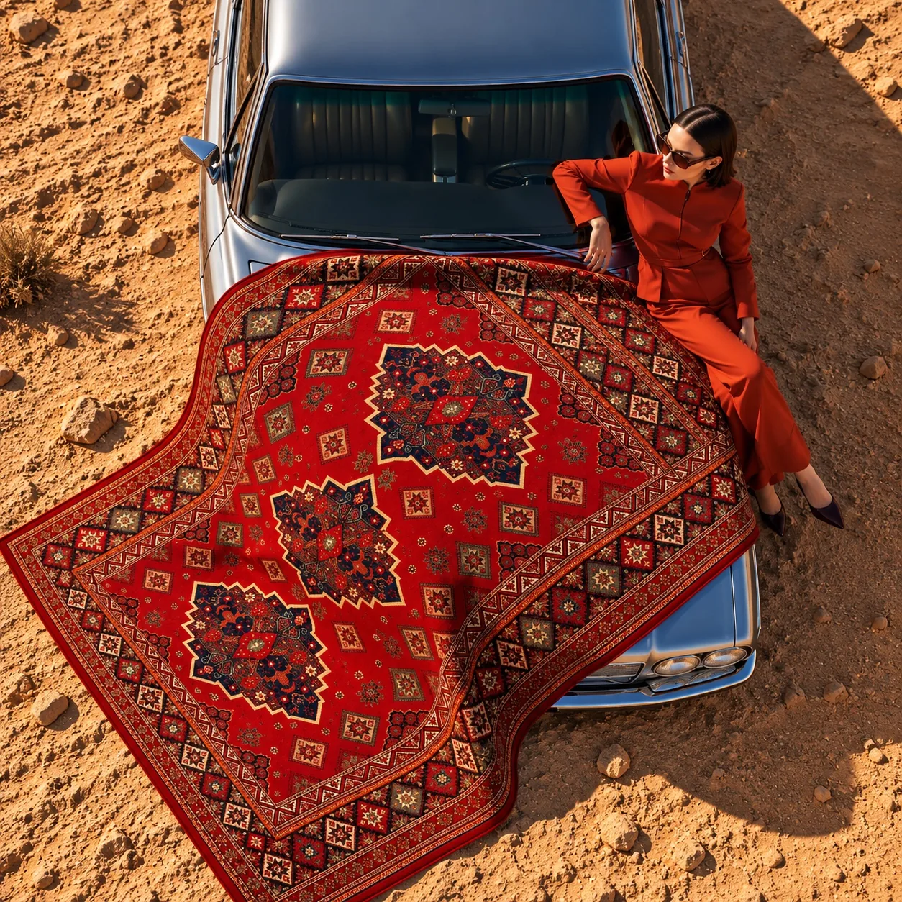

RUG / INDEPENDENT CONCEPT
A Pattern's Journey
A visual story that brings a red patterned rug together with a desert landscape, a vintage car and fashion-inspired styling.

PROJECT FILM
A pattern beyond the familiar setting.
A short promotional film. Playback and sound are in your control.
VISUAL SERIES
One product, different perspectives.



LET'S CREATE TOGETHER
What story could we tell for your product?
Independent concept · No brand collaboration.